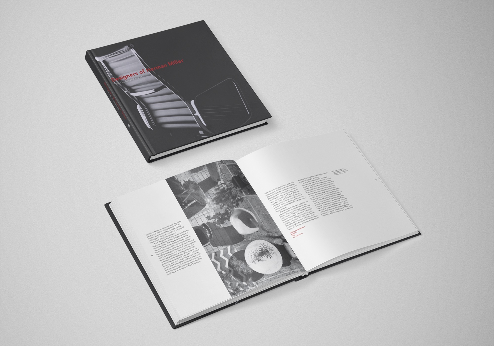
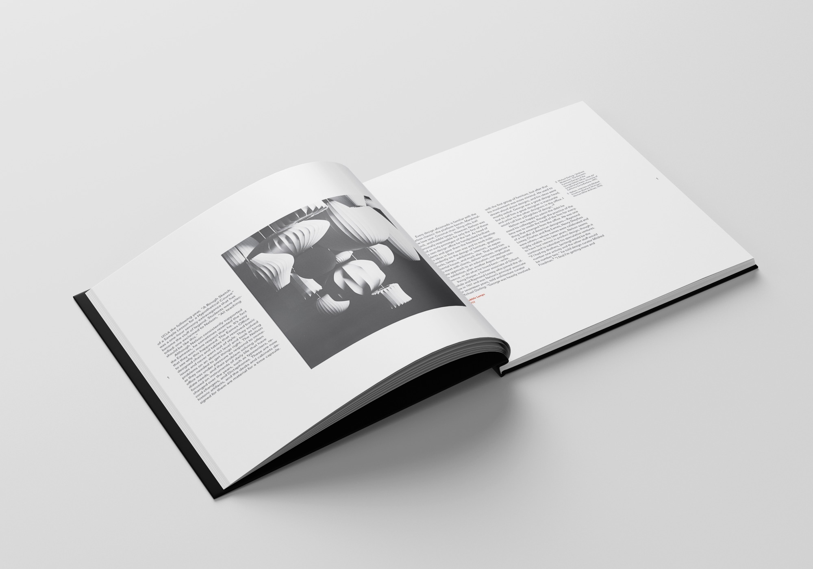
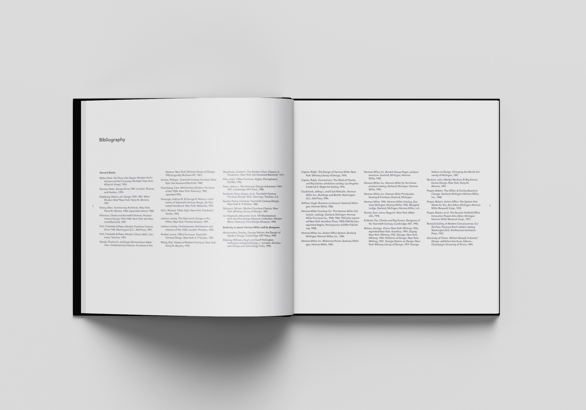

Herman Miller Book Design
Editorial & Book Design
This editorial book design project centers on Herman Miller, the iconic furniture designer best known for his legendary lounge chair and ottoman. The design philosophy was simple: let the work speak for itself. Heavy typography and generous white space frame each spread so the images always take center stage, never competing with the layout around them. Gill Sans was the sole typeface throughout, a clean and timeless sans serif that stays quietly out of the way and lets the furniture do the talking. The result is a book that feels as considered and intentional as the designs it celebrates.


